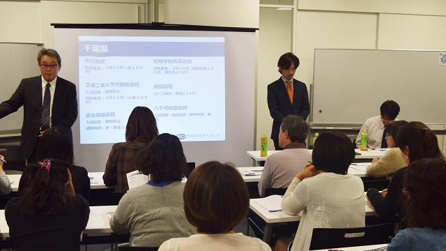

先週の所長管野の記事にもありますが、去る10月23日、月イチお話会を実施しました。今回のテーマは「2017年度高校入試」ということで、テーマがかなり大きめ。たかが高校入試と思われるかも知れませんが、実は高校入試は大学入試の動向と密接に関わっています。そして、大学入試の動向には日本の教育そのものの変化がダイレクトに影響を与えることになりますから、調べなければいけないデータは膨大です。
そんなわけで、実は会の直前まで準備に追われていた私ですが、無事会を終えてみて思うのは、入試業界の「底なし沼」っぷり。変更点一つとっても、なぜ変わるのかを突き詰めて考えてみると調べなければいけないことが山のように出てくるのです。
たとえば、千葉県の2017年度入試最大の変更点は「五教科入試の拡大」です。昔から五科入試を行っている渋谷幕張高校に加えて、今年から市川高校、芝浦工大柏高校、昭和秀英高校でも五教科入試が導入されます。この情報自体は各高校のウェブサイトを調べればすぐ出てきます。しかし、「なぜ」五科なのかとなると一筋縄ではいきません。これらの高校はいずれも入試難易度がとても高い千葉の最難関校ばかり。しかし、それぞれを細かく見ると、同じ五科といっても微妙な違いがあることに気づきます。
正直なところ、当事者の受験生にとっては、その理由を知ることはそこまで重要ではないかも知れません。どんな意図であれ、問題が解けるかどうかがすべてです。しかし、子供にクオリティの高い教育を受けさせたいと思っている保護者の方にとっては重要です。学校が3科入試を選ぶのか、5科入試を選ぶのかは、卑近なところでは各校が合格者排出を目標とする大学のタイプ（国立か私立か）によって変わってきますし、大きくはその学校が学問をどうとらえているか（理社までを含めて学問を総体として見ているか）によっても変わってくるでしょう。
上記例以外にも、2020年大学入試改革を受けて各高校が行う様々な取り組みにも微妙な温度差があります。各校一様にうたう「ITC教育」や「アクティブラーニング」ですが、その取り組みはどこまで本気なのか。これは学校のウェブサイトを見るだけではなかなか見えてきません。
教育研究所ARCSは、これらの「見えづらい意図」を推測し、それを情報として提供することを目指して今後も月イチお話会を実施していきます。
直近では12月。「塾ソムリエ」と題して中学生対象の塾に切り込みます。中学受験向けの塾についてはその善し悪し、タイプを説明した本やサイトには事欠きませんが、高校受験向けとなるとほとんどないのが現状です。中学生のお子さんをお持ちの保護者の方は、是非ふるってご参加ください。